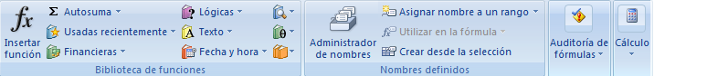

INTRODUCCION A EXCEL
MS Excel es una hoja de cálculo con la cual se pueden desarrollar una gran cantidad de operaciones; para hacerlo, cuenta con diferentes funciones internas para manejar fechas, horas, operaciones matemáticas avanzadas, operaciones estadisticas y financieras, etc.; esto es lo que lo hace tan poderoso, ya que aplicando un par de fórmulas se ahorra bastante tiempo de cálculos aritméticos porque éstas pueden copiarse a múltiples celdas de manera estructurada.
Este programa lo pueden utilizar lo mismo estudiantes que oficinistas, secretarias y gerentes, así como contadores y auditores entre muchos otros.
Cuenta con herramientas como son Gráficos, Filtros, Macros, Etc.